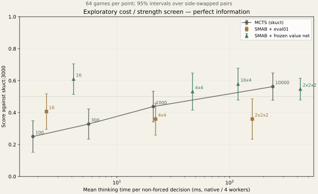

状態：{"status": "complete", "screen_games": 704, "confirmation_games": 1536}
以下は時間を合わせた新規シード各256戦。途中で時間がずれた試験も下の全記録に残し、合算していません。深さ1は深いαβ枝刈りを使わず、少数候補から解く行列探索です。
| 候補 | MCTS対照 | スコア ±95% | 平均ms 候補 / MCTS | 多重比較調整区間 |
|---|---|---|---|---|
| net:16 | mcts:200 | 0.613 ± 0.056 | 3.95 / 3.88 | 0.538–0.688 |
| eval:16 | mcts:130 | 0.484 ± 0.055 | 2.08 / 2.12 | 0.410–0.559 |
| net:4x4 | mcts:2080 | 0.441 ± 0.055 | 40.08 / 43.06 | 0.367–0.515 |
一次調査704戦、確認1536戦。対局打切は合計0件。多重比較区間は時間調整前を含む確認試験全体にBonferroni補正を適用しています。浅い設定の勝利を、深いαβ探索の成果とは解釈しません。深い設定の未検出を「あらゆるαβ法が無望」とも解釈しません。
双方が完全情報を持つ対戦で、同時手番αβ系とMCTS系（skuct）を比較。チーム選出は共通、24チームから一様抽選。evalは既存評価関数、netは保存済みmodel-d3（追加学習なし）。各手は深さ1から反復深化し、エンジン実行10万回の上限で最後に完了した深さを採用します。
一次調査は各64戦、同じ組合せ・シード。時間と成績から最大2設定を選び、新しいシードで各256戦の直接対戦を行います。思考時間は選出と強制一択を除く平均です。4並列のネイティブ測定で、ブラウザの待ち時間ではありません。
スコアは勝ち1・引分0.5・負け0、±は先後交換ペアを単位とする95%区間。対局の打ち切りは未解決として別に数えます。一次調査の相手は共通ですが、その相手への成績だけで全対戦相手に通用するパレート優越は主張しません。

| 試験 | A | B | Aスコア | 平均ms A / B | 対局打切 |
|---|---|---|---|---|---|
| screen-00 | mcts:1000 | mcts:3000 | 0.438 ± 0.096 | 21.0 / 66.9 | 0 |
| screen-01 | eval:16 | mcts:3000 | 0.406 ± 0.112 | 2.4 / 63.6 | 0 |
| screen-02 | net:16 | mcts:3000 | 0.609 ± 0.096 | 4.1 / 67.1 | 0 |
| screen-03 | mcts:100 | mcts:3000 | 0.250 ± 0.098 | 1.8 / 64.3 | 0 |
| screen-04 | eval:4x4 | mcts:3000 | 0.359 ± 0.101 | 22.0 / 63.4 | 0 |
| screen-05 | net:4x4 | mcts:3000 | 0.531 ± 0.116 | 46.9 / 69.2 | 0 |
| screen-06 | mcts:300 | mcts:3000 | 0.328 ± 0.094 | 5.6 / 64.0 | 0 |
| screen-07 | eval:2x2x2 | mcts:3000 | 0.359 ± 0.126 | 158.8 / 67.0 | 0 |
| screen-08 | net:2x2x2 | mcts:3000 | 0.547 ± 0.068 | 423.6 / 69.2 | 0 |
| screen-09 | net:16x4 | mcts:3000 | 0.578 ± 0.099 | 118.8 / 68.0 | 0 |
| screen-10 | mcts:10000 | mcts:3000 | 0.562 ± 0.085 | 241.6 / 68.7 | 0 |
| confirm-00-cost | net:16 | mcts:200 | 0.613 ± 0.056 | 4.0 / 3.9 | 0 |
| confirm-00 | net:16 | mcts:150 | 0.664 ± 0.056 | 4.1 / 2.8 | 0 |
| confirm-01-tight | eval:16 | mcts:130 | 0.484 ± 0.055 | 2.1 / 2.1 | 0 |
| confirm-01 | eval:16 | mcts:100 | 0.566 ± 0.058 | 2.4 / 1.8 | 0 |
| confirm-02-tight | net:4x4 | mcts:2080 | 0.441 ± 0.055 | 40.1 / 43.1 | 0 |
| confirm-02 | net:4x4 | mcts:1800 | 0.477 ± 0.053 | 46.5 / 40.2 | 0 |
事前条件 · 全結果集計 · 探索一致検証 · 同一ボット対照 · 候補選択
共有プレビューハブの項目：nc2000-smab-strength。自動更新や点滅はありません。